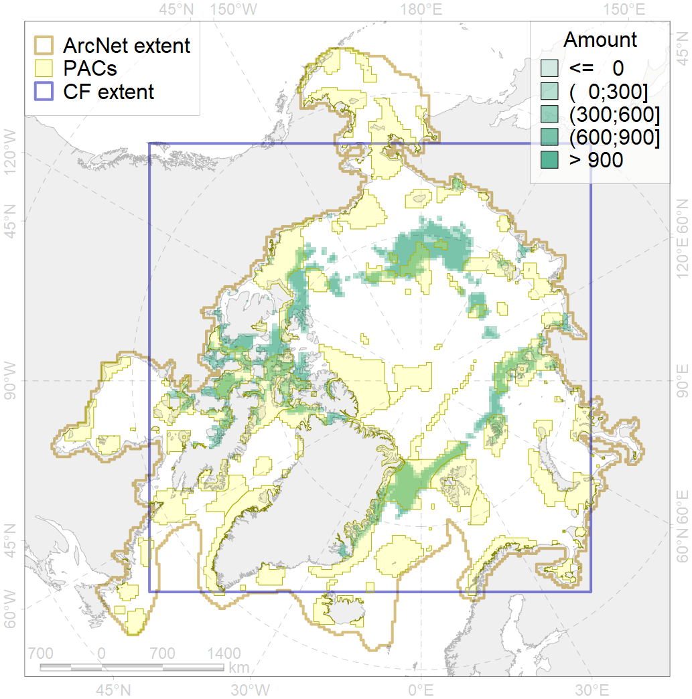
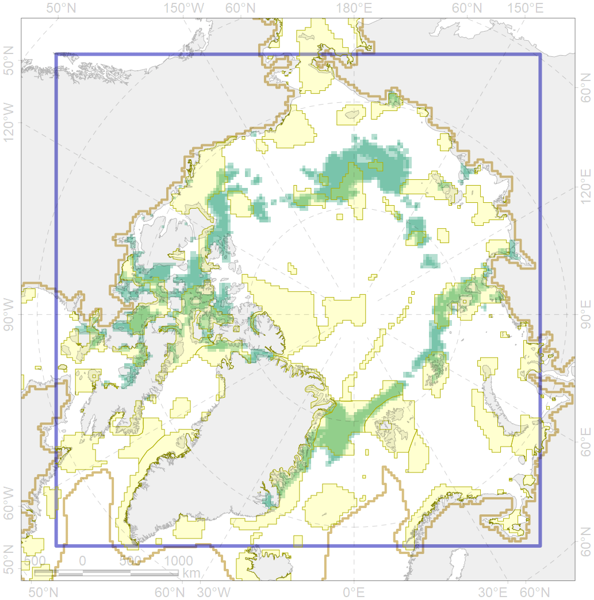

2061

| CF ID | 2061 |
| CF Name | Ringed seal circumpolar foraging areas as predicted by MIZ distribution |
| Time Period | 1979-2017 |
| Source(s) | Trukhanova; Platonov (MIZ data); Hamilton et al 2017 |
| Seasonality | August-October |
| Depth Horizon | 0-400m |
| Methodology | Expert input; surrogate data; data compilation |
| Author Name | Irina Trukhanova |
| Notes | |
| Conservation Target Set in the Scenario | 0.24 |
| Conservation Target Achieved in the Scenario | 0.457 (Scenario: 190.5%) |
| PAC ID | Proportion in the PAC | Contribution to ArcNet Target Achievement | PAC’s Contribution to the Achieved Target |
|---|---|---|---|
| 8 | 0.4% | 1.5% | 0.8% |
| 11 | 0.4% | 1.4% | 0.8% |
| 13 | 0.2% | 0.6% | 0.3% |
| 14 | 5.5% | 18.1% | 9.5% |
| 22 | 1.0% | 4.2% | 2.2% |
| 29 | 13.0% | 52.3% | 27.5% |
| 30 | 0.4% | 1.5% | 0.8% |
| 32 | 2.4% | 9.6% | 5.0% |
| 33 | 0.2% | 1.0% | 0.5% |
| 50 | 0.0% | 0.1% | 0.0% |
| 51 | 1.1% | 4.3% | 2.2% |
| 52 | 5.1% | 19.9% | 10.4% |
| 54 | 0.2% | 1.0% | 0.5% |
| 56 | 0.1% | 0.2% | 0.1% |
| 57 | 7.7% | 26.4% | 13.9% |
| 59 | 0.5% | 1.2% | 0.6% |
| 62 | 1.2% | 3.7% | 1.9% |
| 63 | 0.4% | 1.3% | 0.7% |
| 65 | 4.7% | 17.2% | 9.0% |
| 66 | 1.0% | 3.7% | 1.9% |
| 67 | 0.7% | 2.8% | 1.4% |
| 74 | 0.0% | 0.1% | 0.1% |
| 82 | 0.7% | 1.9% | 1.0% |
| inner | 47.0% | 174.0% | 91.3% |
| outer | 53.0% | 16.5% | 8.7% |